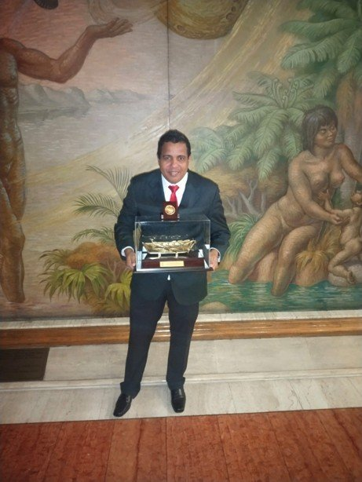
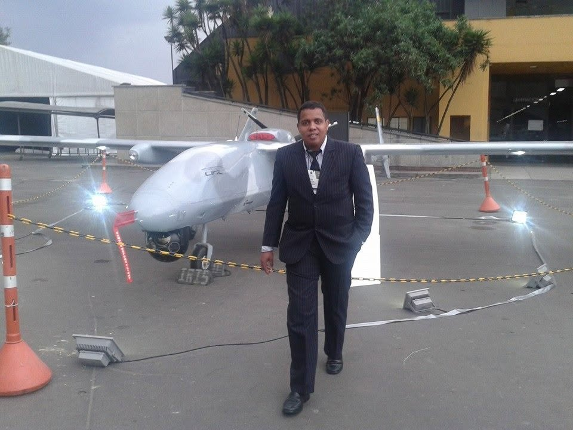
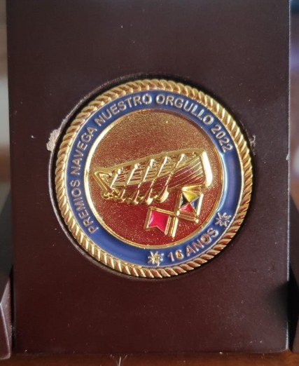
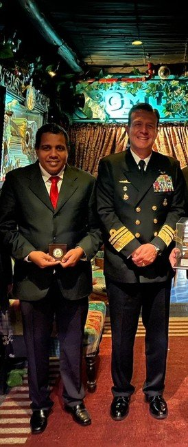
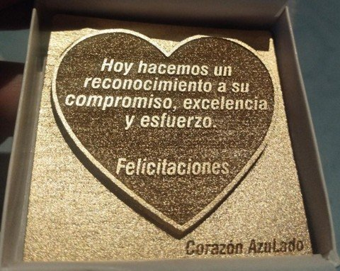
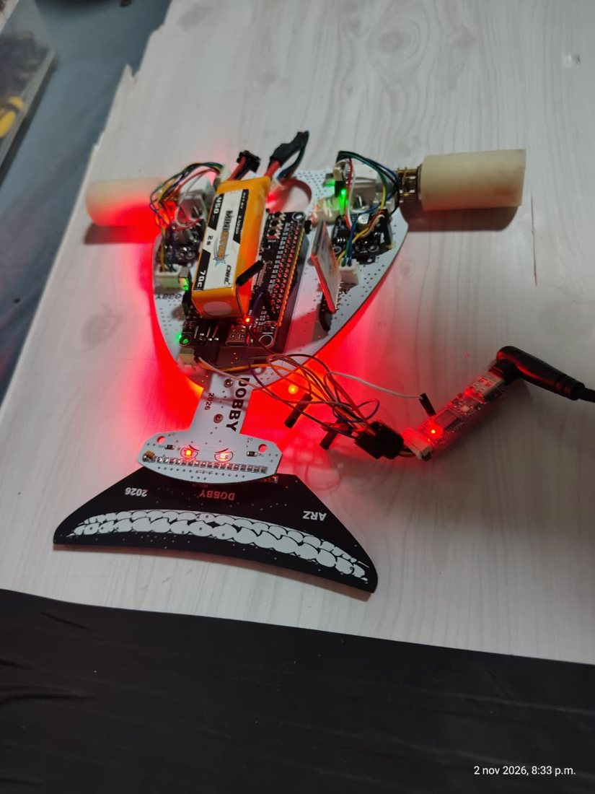
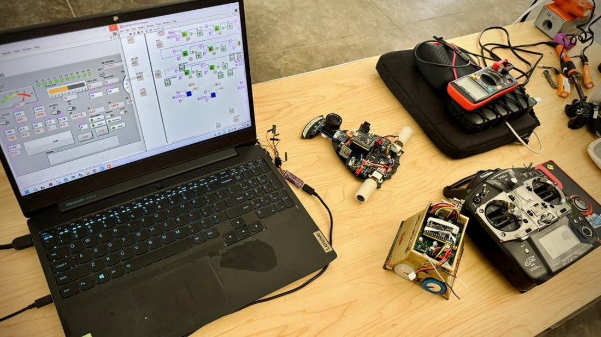
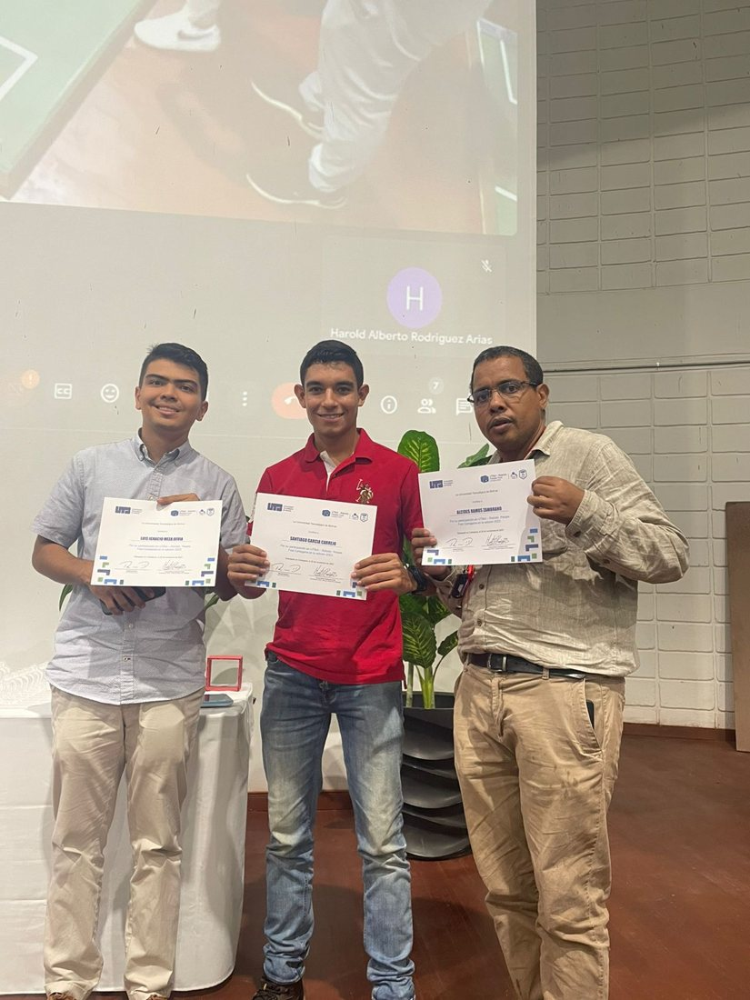
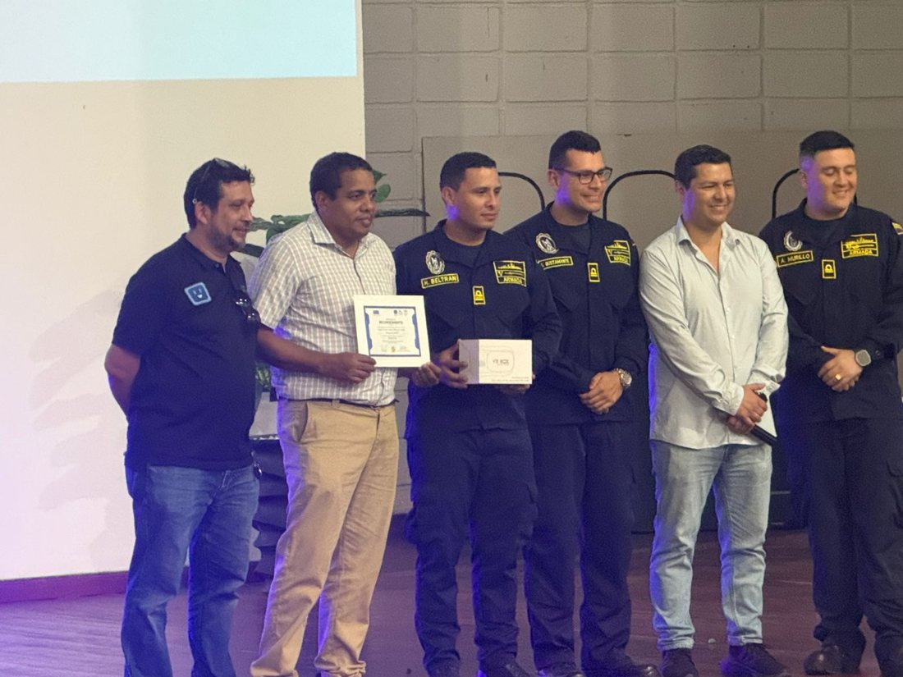

2022
Premios Navega Nuestro Orgullo
Galardón entregado en la ceremonia de los Premios Navega Nuestro Orgullo 2022.

Ingeniero electrónico y magíster, docente de la Universidad Tecnológica de Bolívar en Cartagena. Más de 20 años en la electrónica: mantenimiento de equipos biomédicos, y diseño de vehículos autónomos para la Armada Nacional, control industrial y sistemas embebidos con STM32, Texas Instruments, ESP32 y PIC.

Robot didáctico programable controlado por computador vía radiofrecuencia. Mi tesis, terminada en marzo de 2001 y calificada como meritoria, en los años en que la mecatrónica se abría campo en Cartagena.

Mantenimiento de máquinas biomédicas: hemodiálisis y bombas de infusión. En paralelo, siempre ligado a la docencia y al desarrollo de software (llamado de enfermería, control de aires acondicionados, control de ósmosis inversa).
ROV submarino, inspección de cascos de buque, boya oceanográfica, piloto automático de buque fluvial (USV) y del avión de vigilancia marítima PAVMA. Proyectos financiados por Colciencias y el Ministerio de Defensa.
Maestría en la Universidad del Cauca. Mi tesis: diseño de un sistema de evasión de obstáculos fijos y móviles para un vehículo de superficie, la base del piloto autónomo de los USV.
Vehículo de superficie no tripulado para patrullaje marítimo y fluvial, con LIDAR, AIS y cámaras térmicas, y un banco de pruebas para torpedo.
Grupo de Investigación en Control, Comunicaciones y Diseño de la Escuela Naval Almirante Padilla, categoría B de Colciencias.
Tarjetas de integración para COTECMAR, control de plantas de ósmosis y microfiltración, ingeniería inversa de control hidráulico. Participación en Expodefensa 2023.
Tableros de control, estación meteorológica IoT y charlas como la de la Universidad Privada del Norte (Perú, 2024).
Reconocimientos que he recibido por mi trabajo en investigación, desarrollo y docencia con la Armada de Colombia y la Escuela Naval Almirante Padilla.

Galardón entregado en la ceremonia de los Premios Navega Nuestro Orgullo 2022.

Medalla conmemorativa de los Premios Navega Nuestro Orgullo 2022, en su edición número 16.

Por el impacto de la producción científica y tecnológica de la ENAP a las Fuerzas Militares.

Entrega del reconocimiento junto a la alta oficialidad de la Armada de Colombia.

"Hoy hacemos un reconocimiento a su compromiso, excelencia y esfuerzo."
Robot didáctico programable controlado por computador vía radiofrecuencia.
Lo que aprendo en los proyectos lo escribo, lo registro y lo convierto en trabajos de grado. Todo esto está respaldado en mi hoja de vida de Minciencias (CvLAC).
Cada trabajo de grado es un proyecto real hecho con un estudiante: vehículos no tripulados, torpedos, ROV, telemetría, energía y automatización.


45 desarrollos: investigación naval, industria, biomédica y los proyectos que construyen mis estudiantes de Sistemas Embebidos.
La relación con mis estudiantes no termina cuando se acaba el semestre. Muchos de ellos terminan siendo mis colegas: seguimos en contacto, nos reunimos y trabajamos juntos en proyectos reales.
Y escuchar las palabras de agradecimiento de un estudiante en su graduación es algo que para mí no tiene precio.
He dirigido 31 trabajos de grado, y varios de esos estudiantes hoy son ingenieros con los que sigo trabajando.


La competencia es la mejor clase: los estudiantes diseñan la tarjeta, programan el control y se miden en la pista. Construyo robots seguidores de línea velocistas y minisumo, con PCB propia, telemetría y ajuste del controlador en tiempo real, y acompaño a mis equipos en torneos de robótica.

Robot velocista con tarjeta diseñada por mí (ARZ 2026), barra de sensores al frente, batería LiPo y comunicación inalámbrica para telemetría.

Panel en LabVIEW para ver los sensores y ajustar las ganancias del controlador mientras el robot corre, junto al minisumo y el radiocontrol.

Participación con mis estudiantes en el UTBot – Robotic People Fest Cartagena, edición 2023.

Reconocimiento recibido junto a oficiales de la Armada de Colombia en un evento de robótica.
La Escuela Naval Almirante Padilla ganó el torneo de robótica de Expotecnología 2022. ¿Quieres ver cómo se programan? Mira los cursos de robótica.
Las reglas con las que mis estudiantes construyen, para que cada prototipo sea un sistema embebido completo.
Mi canal tiene más de 570 videos y 10 mil suscriptores. La lista de ponencias reúne 9 charlas sobre electrónica y sistemas embebidos, entre ellas la de la Universidad Privada del Norte del Perú.